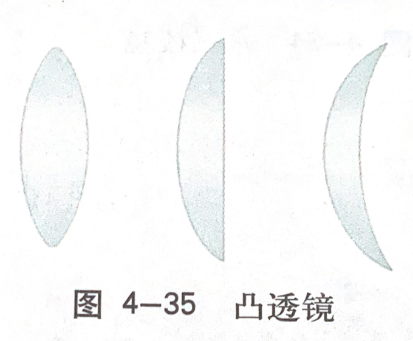

20191207
目录
▶︎
all
running...
光的色散
色散

拓展：光的波长与频率
- 波长越长，频率越低

颜色的本质
人眼、人脑对于不同波长光线的不同处理
凸透镜成像
凸透镜
也称为汇聚透镜 两个表面，至少一个表面是球面

- 结构与定义
- 主光轴/光轴
- 光心
- 通过光心，传播方向不变
- 焦点
- 焦距
- 光学特点
- 平行光汇聚于一点
- 平行于主光轴时汇聚于焦点
- 不平行时汇聚于焦平面
- 作图
- 两根主要光线
- 平行光汇聚于一点
凸透镜成像规律
-
凸透镜成像作图
-
小测试
- 若小孔成像的孔为三角形，成像效果如何
- 若凸透镜缺损，成像效果如何
-
凸透镜成像规律